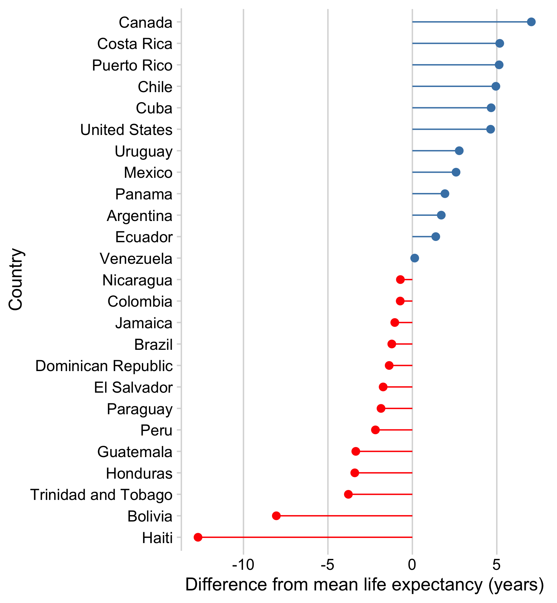
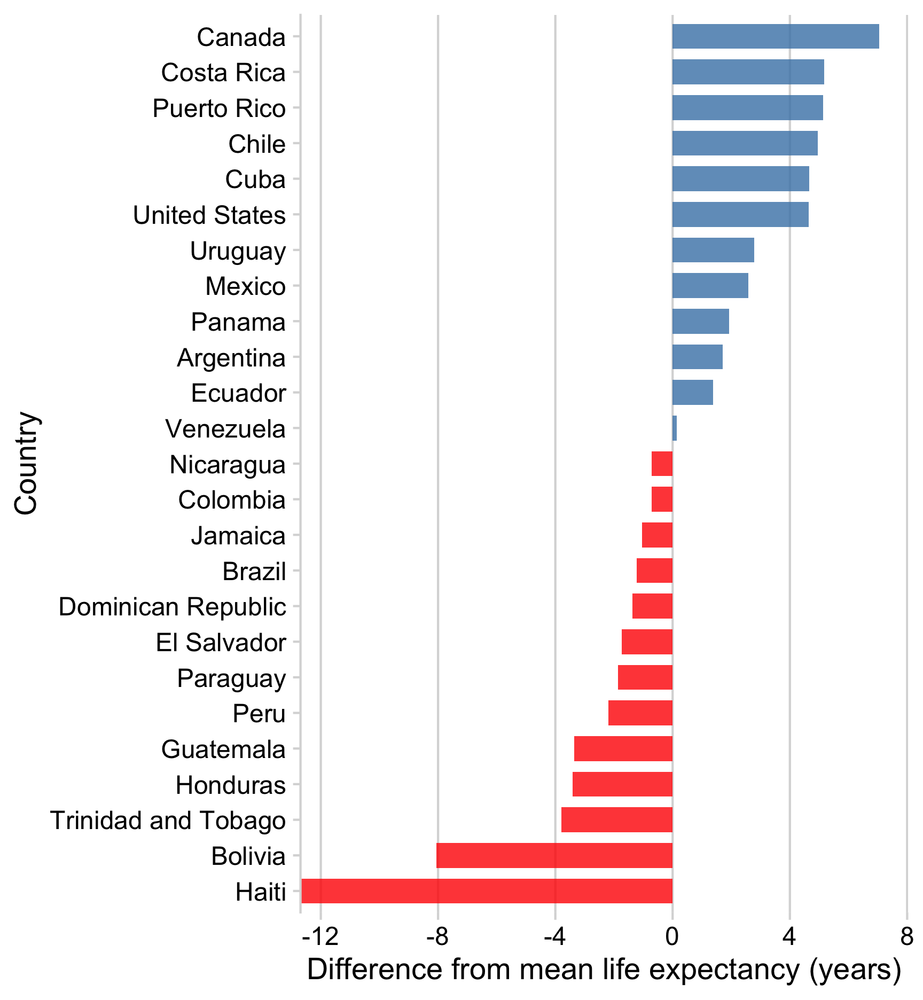
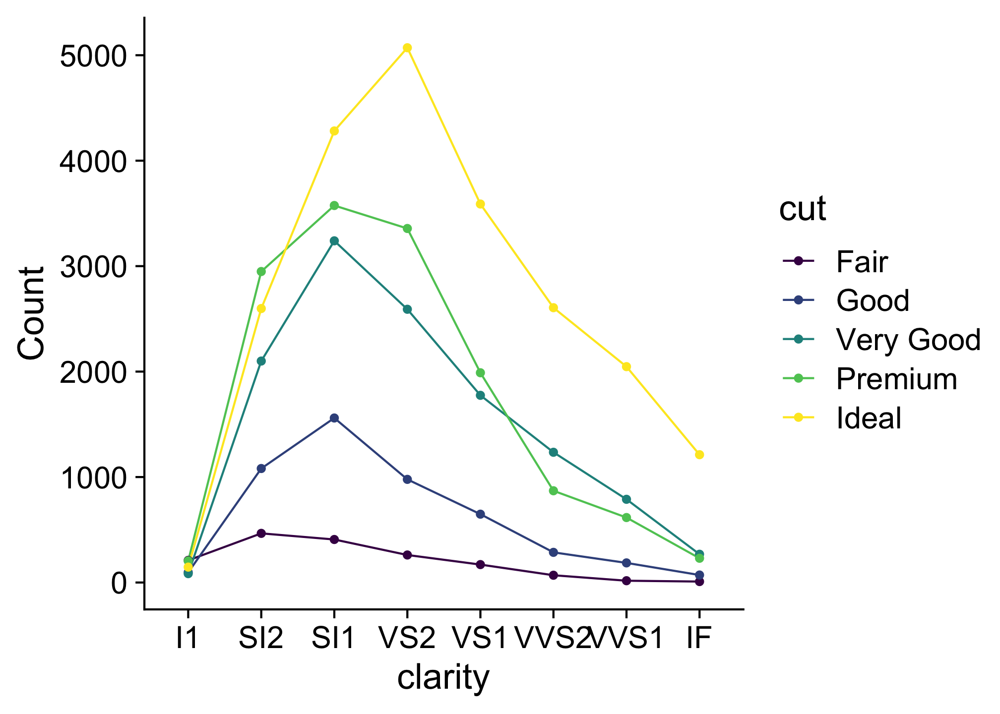
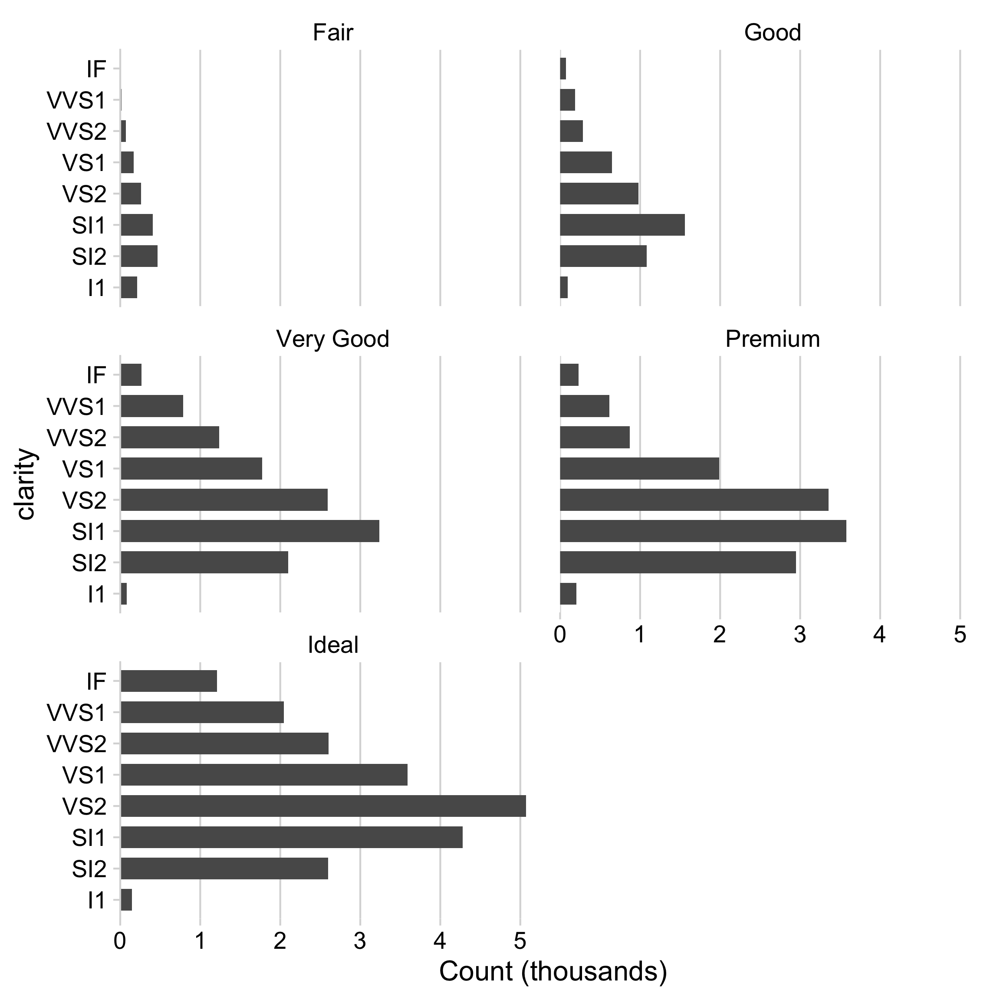
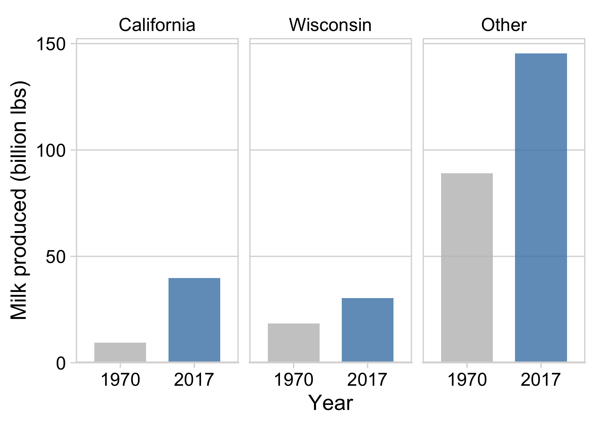
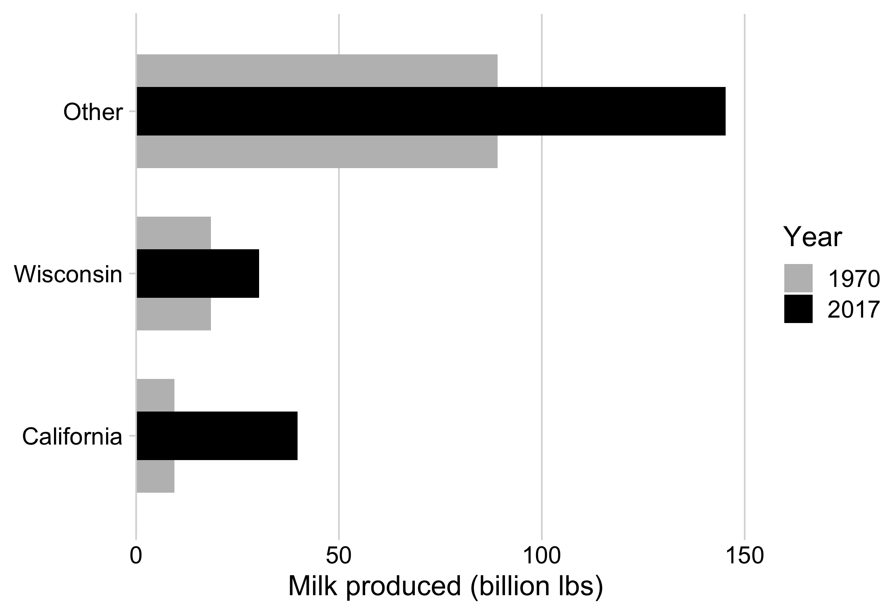
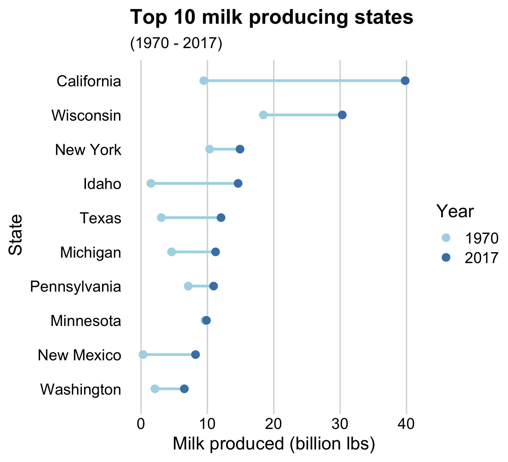
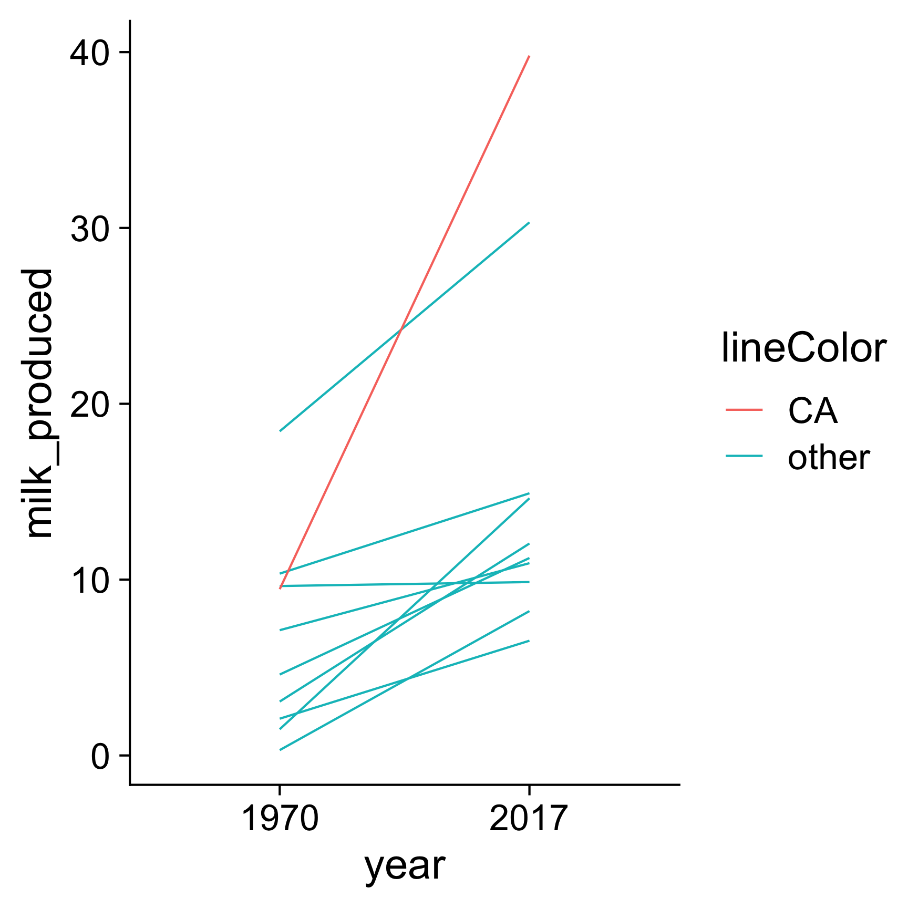
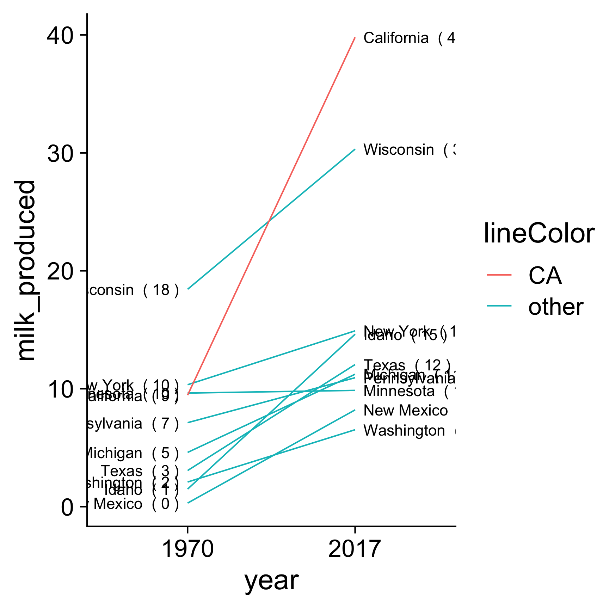
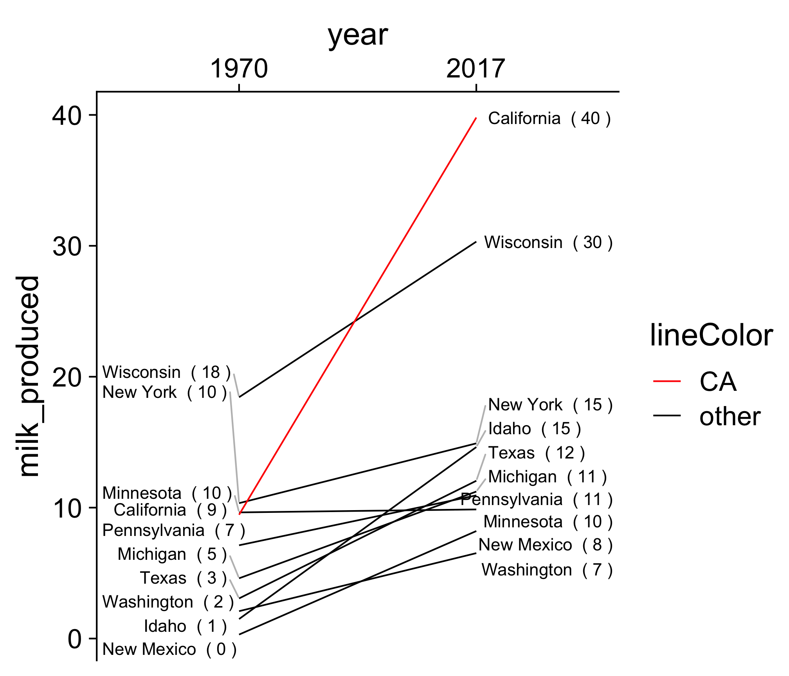

gapminder_americas <- gapminder %>%
filter(continent == "Americas", year == 2007) %>%
mutate(country = fct_reorder(country, lifeExp))12 Comparisons
“At the heart of quantitative reasoning is a single question: Compared to what?”
– Edward Tufte
Comparing things is one of the most common tasks in data visualization. Of course, some charts make certain comparisons easier than others. In this chapter, we’ll look into different strategies for making comparisons.
12.1 Comparing to a Reference
For this section, we’ll be using this data frame:
Using reference lines helps to add context to chart. For example, consider the following chart of life expectancy in the Americas:
life_expectancy_dots <- gapminder_americas %>%
ggplot() +
geom_point(
aes(x = lifeExp, y = country),
color = 'steelblue', size = 2.5
) +
theme_minimal_vgrid(font_size = 18) +
labs(
x = 'Life expectancy (years)',
y = 'Country'
)
life_expectancy_dotsWe can add more context to the chart by adding a mean life expectancy reference line:
life_expectancy_dots +
geom_vline(
xintercept = mean(gapminder_americas$lifeExp),
color = 'red', linetype = 'dashed'
) +
annotate(
'text', x = 73.2, y = 'Puerto Rico',
color = 'red', hjust = 1,
label = 'Mean Life\nExpectancy'
)
Here we’re using geom_vline() to add a vertical line and annotate() to add text.
You can also compute the difference from the mean and make zero the reference line. To do so, we first compute the difference from the mean and then define a variable to use for the color to denote whether the country’s life expectancy is above or below the mean:
gapminder_diverging <- gapminder_americas %>%
mutate(
# Subtract the mean
lifeExp = lifeExp - mean(lifeExp),
# Define the fill color
color = ifelse(lifeExp > 0, 'Above', 'Below')
)Then we can use a lollipop chart or bar chart to visualize the difference from the mean:
gapminder_diverging %>%
ggplot() +
geom_segment(
aes(x = 0, xend = lifeExp, y = country, yend = country, color = color)
) +
geom_point(
aes(x = lifeExp, y = country, color = color),
size = 2.5
) +
scale_color_manual(values = c('steelblue', 'red')) +
theme_minimal_vgrid() +
theme(legend.position = 'none') +
labs(
x = 'Difference from mean life expectancy (years)',
y = 'Country'
)
gapminder_diverging %>%
ggplot() +
geom_col(
aes(x = lifeExp, y = country, fill = color),
width = 0.7, alpha = 0.8
) +
scale_fill_manual(values = c('steelblue', 'red')) +
scale_x_continuous(expand = expansion(mult = c(0, 0.05))) +
theme_minimal_vgrid() +
theme(legend.position = 'none') +
labs(
x = 'Difference from mean life expectancy (years)',
y = 'Country'
)
12.2 Comparing Across Multiple Categories
Neither of these two charts are great at clearly comparing multiple categories. They both make it difficult to compare elements across the categories.

When comparing across multiple categories consider Parallel coordinates charts or faceting.
12.2.1 Parallel coordinates charts
These charts are great for comparing multiple categories. They’re essentially line charts that are stacked on top of each other, which you can easily make with geom_line() and geom_point():
diamonds %>%
count(clarity, cut) %>%
ggplot(aes(x = clarity, y = n,color = cut, group = cut)) +
geom_line() +
geom_point() +
scale_y_continuous(limits = c(0, 5100)) +
theme_half_open(font_size = 18) +
labs(y = "Count")
12.2.2 Faceting
Facets are great for comparing multiple categories. They’re essentially small multiples of a repeated chart that allows to compare elements both within the individual facets as well as across the facets.
Here is an effective example of faceting from Financial Times on the early days of the COVID-19 pandemic:
Faceting is easy to achieve in ggplot2 with facet_wrap():
diamonds %>%
count(clarity, cut) %>%
ggplot() +
geom_col(aes(x = clarity, y = n), width = 0.7) +
facet_wrap(vars(cut), nrow = 1) +
scale_y_continuous(expand = expansion(mult = c(0, 0.05))) +
theme_minimal_hgrid(font_size = 16)You can change the nrow or ncol arguments to change the layout of the facets, e.g.:
diamonds %>%
count(clarity, cut) %>%
mutate(n = n / 1000) %>%
ggplot() +
geom_col(aes(x = clarity, y = n), width = 0.7) +
facet_wrap(vars(cut), ncol = 2) +
coord_flip() +
scale_y_continuous(expand = expansion(mult = c(0, 0.05))) +
theme_minimal_vgrid(font_size = 16) +
labs(y = "Count (thousands)")
12.3 Comparing Two Things
12.3.1 Dodged bars
In this section, we’ll use this dataset comparing milk production in California and Wisconsin in 1970 and 2017:
milk_compare <- milk_production %>%
filter(year %in% c(1970, 2017)) %>%
mutate(
state = fct_other(state, keep = c('California', 'Wisconsin'))
) %>%
group_by(year, state) %>%
summarise(
milk_produced = sum(milk_produced) / 10^9
)
milk_compare#> # A tibble: 6 × 3
#> # Groups: year [2]
#> year state milk_produced
#> <dbl> <fct> <dbl>
#> 1 1970 California 9.46
#> 2 1970 Wisconsin 18.4
#> 3 1970 Other 89.1
#> 4 2017 California 39.8
#> 5 2017 Wisconsin 30.3
#> 6 2017 Other 145.When comparing only two things, dodged bars are a good starting point. This can be achieved with geom_col() and position = 'dodge':
milk_compare %>%
ggplot() +
geom_col(
aes(x = milk_produced, y = state, fill = as.factor(year)),
width = 0.7, alpha = 0.8,
position = 'dodge'
) +
scale_fill_manual(
values = c('grey', 'steelblue'),
guide = guide_legend(reverse = TRUE)
) +
scale_x_continuous(expand = expansion(mult = c(0, 0.05))) +
theme_minimal_vgrid() +
labs(
x = 'Milk produced (billion lbs)',
y = NULL,
fill = 'Year'
)Notice in this example we only have 2 categories in the legend. This is not by accident! In general, avoid putting >2 categories in legend. For example, the same chart could be made with the states in the legend and year on the axis, but that would put three categories in the legend:
milk_compare %>%
ggplot() +
geom_col(
aes(x = as.factor(year), y = milk_produced, fill = state),
width = 0.7, alpha = 0.8,
position = 'dodge'
) +
scale_fill_manual(values = c('grey', 'steelblue', 'sienna')) +
scale_y_continuous(expand = expansion(mult = c(0, 0.05))) +
theme_minimal_hgrid(font_size = 16) +
labs(
x = 'Year',
y = 'Milk produced (billion lbs)'
)This is worse because it requires the reader to look back and forth between the legend and the chart, which is easier to do with only two categories.
Of course, you can also use facets to get rid of the legend!
milk_compare %>%
ggplot() +
geom_col(
aes(x = as.factor(year), y = milk_produced, fill = as.factor(year)),
width = 0.7, alpha = 0.8
) +
scale_fill_manual(values = c('grey', 'steelblue')) +
facet_wrap(~state) +
scale_y_continuous(expand = expansion(mult = c(0, 0.05))) +
theme_minimal_hgrid(font_size = 18) +
panel_border() +
theme(legend.position = 'none') +
labs(
x = 'Year',
y = 'Milk produced (billion lbs)'
)
12.3.2 Bullet charts
Bullet charts are also effective for comparing 2 things, in partiuclar if one of the two things is some sort of target or threshold value that you wish to compare the other thing to. For example:
milk_compare %>%
pivot_wider(
names_from = year,
values_from = milk_produced
) %>%
ggplot() +
geom_col(
aes(x = `1970`, y = state, fill = '1970'),
width = 0.7
) +
geom_col(
aes(x = `2017`, y = state, fill = '2017'),
width = 0.3
) +
scale_fill_manual(values = c('grey', 'black')) +
scale_x_continuous(expand = expansion(mult = c(0, 0.05))) +
theme_minimal_vgrid(font_size = 18) +
labs(
x = 'Milk produced (billion lbs)',
y = NULL,
fill = "Year"
)
12.4 Comparing Two Things Across More Than 2 Categories
While dodged bars are good for comparing 2 things, using them for 2 things across more than 2 categories can get confusing. Let’s see an example with 10 categories:
top10states <- milk_production %>%
filter(year == 2017) %>%
arrange(desc(milk_produced)) %>%
slice(1:10) %>%
pull(state)
milk_compare_toomany <- milk_production %>%
filter(
year %in% c(1970, 2017),
state %in% top10states
) %>%
mutate(
milk_produced = milk_produced / 10^9,
state = fct_reorder(state, milk_produced)
)
milk_compare_toomany#> # A tibble: 20 × 4
#> region state year milk_produced
#> <chr> <fct> <dbl> <dbl>
#> 1 Northeast New York 1970 10.3
#> 2 Northeast Pennsylvania 1970 7.12
#> 3 Lake States Michigan 1970 4.60
#> 4 Lake States Wisconsin 1970 18.4
#> 5 Lake States Minnesota 1970 9.64
#> 6 Southern Plains Texas 1970 3.06
#> # ℹ 14 more rowsThe chart below compares 2 time periods, but across 10 categories, which is just too overwhelming to make sense of.
milk_compare_toomany %>%
ggplot() +
geom_col(
aes(x = milk_produced, y = state, fill = as.factor(year)),
width = 0.7, alpha = 0.8,
position = 'dodge'
) +
scale_fill_manual(
values = c('grey', 'steelblue'),
guide = guide_legend(reverse = TRUE)
) +
scale_x_continuous(
expand = expansion(mult = c(0, 0.05))
) +
theme_minimal_vgrid(font_size = 18) +
labs(
x = 'Milk produced (billion lbs)',
y = NULL,
fill = 'Year'
)Two strategies to address this include:
Dumbbell charts, for highlighting magnitudes across two periods / groups

Slope charts, for highlighting change in rankings across two periods / groups

12.4.1 How to make a Dumbbell chart
First, create data frame for plotting.
top10states <- milk_production %>%
filter(year == 2017) %>%
arrange(desc(milk_produced)) %>%
slice(1:10) %>%
pull(state)
milk_summary_dumbbell <- milk_production %>%
filter(
year %in% c(1970, 2017),
state %in% top10states) %>%
mutate(
# Reorder state variables
state = fct_reorder2(state, year, desc(milk_produced)),
# Convert year to discrete variable
year = as.factor(year),
# Modify units
milk_produced = milk_produced / 10^9
)
milk_summary_dumbbell#> # A tibble: 20 × 4
#> region state year milk_produced
#> <chr> <fct> <fct> <dbl>
#> 1 Northeast New York 1970 10.3
#> 2 Northeast Pennsylvania 1970 7.12
#> 3 Lake States Michigan 1970 4.60
#> 4 Lake States Wisconsin 1970 18.4
#> 5 Lake States Minnesota 1970 9.64
#> 6 Southern Plains Texas 1970 3.06
#> # ℹ 14 more rowsThen make lines (note the group variable):
milk_summary_dumbbell %>%
ggplot(aes(x = milk_produced, y = state)) +
geom_line(
aes(group = state),
color = 'lightblue', size = 1
)Add points (note the color variable):
milk_summary_dumbbell %>%
ggplot(aes(x = milk_produced, y = state)) +
geom_line(
aes(group = state),
color = 'lightblue', size = 1
) +
geom_point(aes(color = year), size = 2.5)Change the colors:
milk_summary_dumbbell %>%
ggplot(aes(x = milk_produced, y = state)) +
geom_line(
aes(group = state),
color = 'lightblue', size = 1
) +
geom_point(aes(color = year), size = 2.5) +
scale_color_manual(values = c('lightblue', 'steelblue'))Finally, adjust the theme and annotate:
milk_summary_dumbbell %>%
ggplot(aes(x = milk_produced, y = state)) +
geom_line(
aes(group = state),
color = 'lightblue', size = 1
) +
geom_point(aes(color = year), size = 2.5) +
scale_color_manual(values = c('lightblue', 'steelblue')) +
theme_minimal_vgrid() +
# Remove y axis line and tick marks
theme(
axis.line.y = element_blank(),
axis.ticks.y = element_blank()
) +
labs(
x = 'Milk produced (billion lbs)',
y = 'State',
color = 'Year',
title = 'Top 10 milk producing states',
subtitle = '(1970 - 2017)'
)12.4.2 How to make a Slope chart
First, create data frame for plotting:
top10states <- milk_production %>%
filter(year == 2017) %>%
arrange(desc(milk_produced)) %>%
slice(1:10) %>%
pull(state)
milk_summary_slope <- milk_production %>%
filter(
year %in% c(1970, 2017),
state %in% top10states) %>%
mutate(
# Reorder state variables
state = fct_reorder2(state, year, desc(milk_produced)),
# Convert year to discrete variable
year = as.factor(year),
# Modify units
milk_produced = milk_produced / 10^9,
# Define line color
lineColor = if_else(state == 'California', 'CA', 'other'),
# Make labels
label = paste(state, ' (', round(milk_produced), ')'),
label_left = ifelse(year == 1970, label, NA),
label_right = ifelse(year == 2017, label, NA)
)#> # A tibble: 20 × 5
#> state year milk_produced label lineColor
#> <fct> <fct> <dbl> <chr> <chr>
#> 1 New York 1970 10.3 New York ( 10 ) other
#> 2 Pennsylvania 1970 7.12 Pennsylvania ( 7 ) other
#> 3 Michigan 1970 4.60 Michigan ( 5 ) other
#> 4 Wisconsin 1970 18.4 Wisconsin ( 18 ) other
#> 5 Minnesota 1970 9.64 Minnesota ( 10 ) other
#> 6 Texas 1970 3.06 Texas ( 3 ) other
#> # ℹ 14 more rowsStart with a line plot (note the group variable):
milk_summary_slope %>%
ggplot(aes(x = year, y = milk_produced, group = state)) +
geom_line(aes(color = lineColor))
Add labels, and justify (right or left) using hjust:
| Justification | hjust |
|---|---|
| Right | 0 |
| Center | 0.5 |
| Left | 1 |
milk_summary_slope %>%
ggplot(aes(x = year, y = milk_produced, group = state)) +
geom_line(aes(color = lineColor)) +
# Add 1970 labels (left side)
geom_text(
aes(label = label_left),
hjust = 1, nudge_x = -0.05
) +
# Add 2017 labels (right side)
geom_text(
aes(label = label_right),
hjust = 0, nudge_x = 0.05
)
One common issue you’ll run into is overlapping labels, like you see in the lower-left corner in the chart above. But don’t worry - ggrepel is here to save the day!

Now we can align labels so they don’t overlap:
library(ggrepel)
milk_summary_slope %>%
ggplot(aes(x = year, y = milk_produced, group = state)) +
geom_line(aes(color = lineColor)) +
# Add 1970 labels (left side)
geom_text_repel(
aes(label = label_left),
hjust = 1, nudge_x = -0.05,
direction = 'y', segment.color = 'grey'
) +
# Add 2017 labels (right side)
geom_text_repel(
aes(label = label_right),
hjust = 0, nudge_x = 0.05,
direction = 'y', segment.color = 'grey'
)
Adjust colors:
milk_summary_slope %>%
ggplot(aes(x = year, y = milk_produced, group = state)) +
geom_line(aes(color = lineColor)) +
geom_text_repel(
aes(label = label_left),
hjust = 1, nudge_x = -0.05,
direction = 'y', segment.color = 'grey'
) +
geom_text_repel(
aes(label = label_right),
hjust = 0, nudge_x = 0.05,
direction = 'y', segment.color = 'grey'
) +
# Move year labels to top, modify line colors
scale_x_discrete(position = 'top') +
scale_color_manual(values = c('red', 'black'))
Adjust the theme and annotate:
milk_summary_slope %>%
ggplot(aes(x = year, y = milk_produced, group = state)) +
geom_line(aes(color = lineColor)) +
# Add 1970 labels (left side)
geom_text_repel(
aes(label = label_left),
hjust = 1, nudge_x = -0.05,
direction = 'y', segment.color = 'grey'
) +
# Add 2017 labels (right side)
geom_text_repel(aes(label = label_right),
hjust = 0, nudge_x = 0.05,
direction = 'y', segment.color = 'grey'
) +
# Move year labels to top, modify line colors
scale_x_discrete(position = 'top') +
scale_color_manual(values = c('red', 'black')) +
# Annotate & adjust theme
labs(
x = NULL,
y = 'Milk produced (billion lbs)',
title = 'Top 10 milk producing states (1970 - 2017)'
) +
theme_minimal_grid() +
theme(
panel.grid = element_blank(),
axis.text.y = element_blank(),
axis.ticks = element_blank(),
legend.position = 'none'
)12.5 Comparing Distributions
Overlapping histograms tend to have issues.
#|#| fig-height: 5
#| fig-width: 7
#| fig-align: center
ggplot(marathon) +
geom_histogram(aes(x = Age, fill = `M/F`),
alpha = 0.7, color = 'white',
position = 'identity') +
scale_fill_manual(values = c('sienna', 'steelblue')) +
scale_y_continuous(expand = expansion(mult = c(0, 0.05))) +
theme_minimal_hgrid()